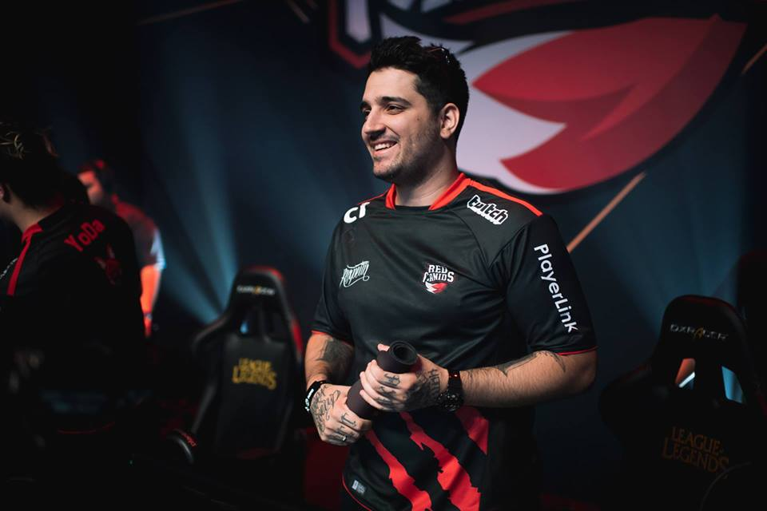
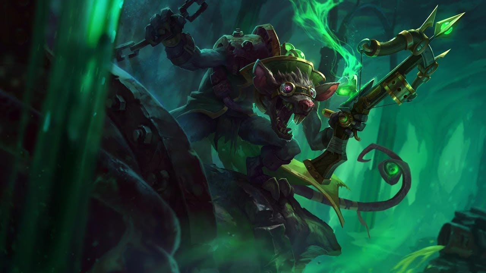
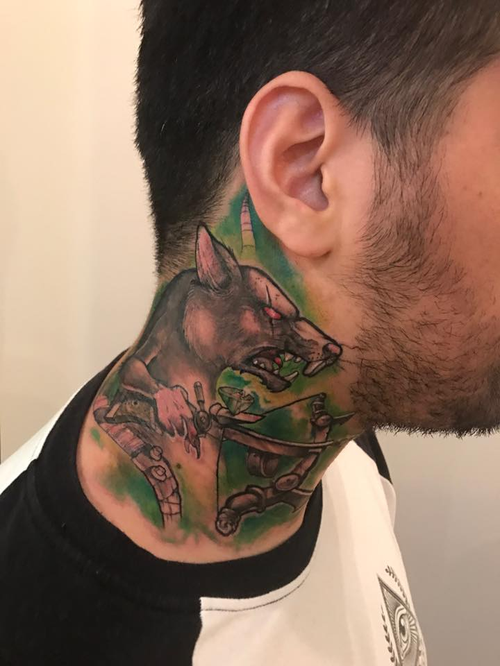

Felipe "brTT" é um dos pro players mais famosos dos eSports no Brasil.
Além de ser um dos jogadores mais vencedores do League of Legends no país -
são quatro títulos de Campeonato Brasileiro de League of Legends (CBLoL) até o momento -,
o atirador do Flamengo tem fama também no exterior, com participação em Mundial pela paiN Gaming,
Mid-Season Invitational (MSI) pela RED Canids e All-Star.
BrTT já está na história do cenário competitivo brasileiro e também
do League of Legends em si. Isso porque o jogador recebeu uma homenagem da
Riot Games dentro do jogo. A desenvolvedora do LoL inseriu um bordão característico do
atirador na fala de Twitch, um dos personagens favoritos dele: "rexxxxxpeita".
Com consideração a homenagem, o jogador resolveu retribuir fazendo uma tatuagem em homenagem ao personagem.


O que não parece ter dado muito certo!